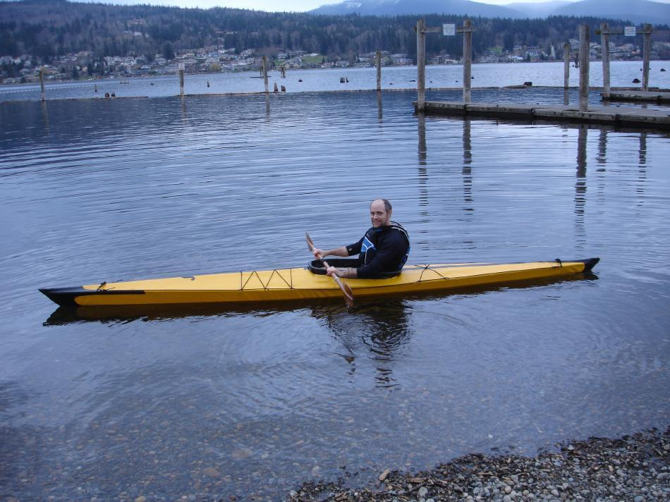

Sea Tour 15-R by Dave Gentry (US)
Menu
Previous Page
Next Page

Dave, from Bellingham, Washington displays his Sea Tour 15-R folder. Build time was less than three weeks spread over a 1.5 year period.